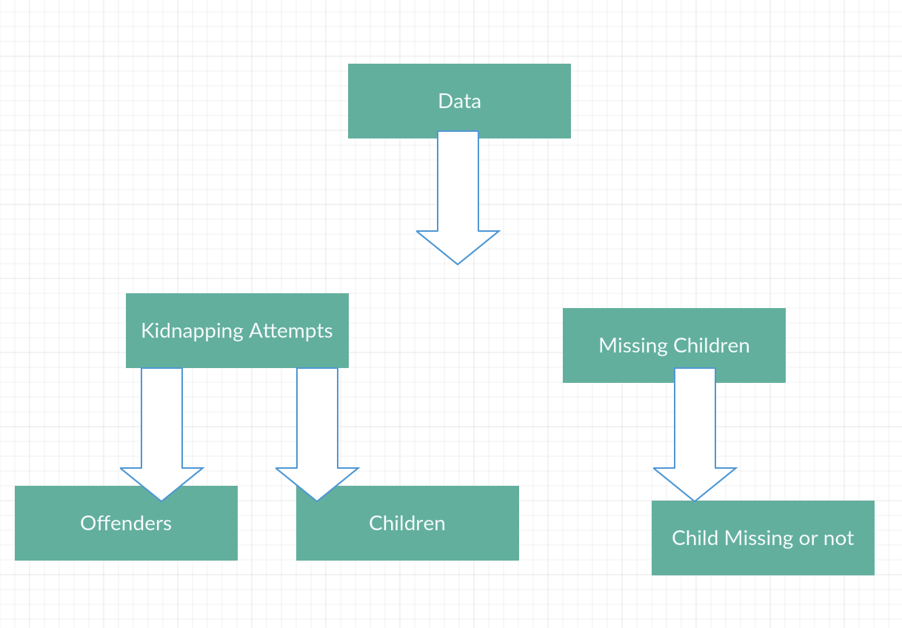

Goal
Create an interactive map of attempted abductions that allows NCMEC to more easily visualize the data to analyze for possible trends/patterns/related incidents. This would be used to disseminate information to both law enforcement and the public in a more efficient manner. Building an interface automatically populates information based on our preset of parameters.
Source and Analysis
